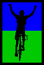
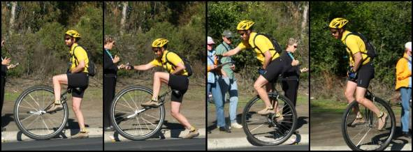

|  |
2006 Low-Key Hillclimbs Overall Results |
|  |
| Nathan Hoover starts on Page Mill. photo by Dan Connelly |
After week 7, Tracy Colwell (team: Team Colwell) won the men's standings, 16.7 points ahead of 2nd-place Patrick Gordis, with 3rd-place Scott Frake a full 19.5 points back. Among the women, Cheryl Hennessy (team: Velo Bella) led by 21.3 points over second-place Stephanie Gruszunski, with Ingrid Erkman in third. Touring club Western Wheelers led the team standings, leaving racing teams Webcor/Alto Velo and San Jose Bike Club on the lower steps of the Low-Key team podium.
Adam Tow took the coveted endurance award, holding off a late charge by unicyclist Nathan Hoover. Bob Parker was the most-improved rider. Special note to Steve Nash, Nathan Hoover, and Beau Hoover, each of whom completed multiple climbs on unicycles, with 14-year-old Beau winning the overall unicyclist, fixed gear, and 16-and-under competitions. Nicely done! Menso de Jung was our top overall junior rider, on a more conventional two wheels...
Thanks to everyone for participating, and to those who came out for the awards ceremony on 5 Dec. We hope you'll be able to come out to Pen Velo's classic San Bruno Hillclimb on New Year's morning! We'll be awarding free entries to top riders in the men's and women's standings, as well as to the most improved rider, at the Awards.
Thanks to our great volunteers for making this series succeed!
pl # rider team category week1 week2 week3 week4 week6 week7 overall 1 51 Tracy Colwell Team Colwell 2 131.02 - - - 137.20 125.11 393.33 2 31 Patrick Gordis Grizzly Peak Cyclists 40+ - - 128.05 - 125.14 123.46 376.64 3 43 Scott Frake WAV-ARA Bald 125.91 123.31 - - --V-- - 373.84 4 19 Menso de Jong Santa Cruz Syndicate Junior 120.84 117.97 131.04 117.97 - 92.30 369.85 5 39 Clark Foy San Jose Bike Club 40+ 119.13 116.29 - 120.26 - 122.04 361.42 6 48 David Kelly Webcor/Alto Velo 4 118.52 114.12 121.46 117.49 121.20 117.96 361.18 7 1 Dan Connelly TNT 3 120.15 115.19 --V-- 119.82 --V-- 116.96 359.95 8 17 Brian Edwards Hell Riders 25-29 118.32 118.54 122.08 116.59 - - 358.94 9 37 Bill Lloyd Le Matin 1 118.39 - - 114.21 122.17 118.26 358.82 10 45 Rupert Brauch WAV-ARA 3 114.76 111.93 - 114.04 122.28 120.54 357.59 11 20 James Porter Western Wheelers Out Of Shape Dads 115.14 112.96 119.51 115.59 --V-- 116.98 354.74 12 36 Bill Davis Webcor/Alto Velo 4 115.01 116.40 - - - 111.91 343.32 13 122 Michael Gonia Western Wheelers 40+ - - - 113.03 117.20 110.00 340.23 14 16 Peter Mehlitz 45+ 108.59 107.98 115.46 110.37 112.75 - 338.57 15 124 Jeff Farnsworth Western Wheelers 40+ - - - 110.42 111.01 107.11 328.53 16 40 Geo Kitta Pen Velo/Kondra 50+ 104.64 106.76 112.23 103.03 - 103.27 323.62 17 88 Peter Tapscott AV: Old Guys Finish 50+ - 102.21 - - 110.20 109.70 322.11 18 4 Fred E. Stamm Pen Velo/Kondra 50+ 106.01 101.79 105.24 107.32 106.22 100.00 319.55 19 35 Ron Brunner Commuter Commuter 102.54 100.53 - 104.77 109.06 104.03 317.86 20 18 Jeff Loufit 45+ 106.01 - - - 106.88 103.02 315.92 21 6 Greg Dougald AV: Old Guys Finish 40+ 100.29 95.22 104.19 --V-- 104.95 - 313.72 22 29 Dean Larson Team Dino 40+ - - 105.02 101.30 104.07 - 310.40 23 21 Pete Heller AV: Old Guys Finish 50+ 99.29 - 100.53 --V-- 104.55 99.40 307.62 24 67 Martin Hyland Western Wheelers 50+ - 94.48 101.63 100.99 - 98.65 301.27 25 2 Kevin Winterfield Low-Key --V-- --V-- 98.19 99.50 98.88 97.01 297.57 26 70 Bob Parker AV: Old Guys Finish 50+ - 90.10 101.13 98.35 - - 289.58 27 90 H. William Mirbach Pen Velo/Kondra 55+ - 90.70 94.01 95.84 98.77 - 288.63 28 11 Peter Merril Adobe 50+ 95.45 92.48 93.90 94.42 96.78 - 286.65 29 9 Ken Straub Team Bikeaholics Older Than You 90.94 - - - 97.54 94.55 283.03 30 34 Stephen Fong San Jose Bike Club 5 88.90 89.05 95.88 91.93 95.09 87.92 282.91 31 86 Alex Matthews No Team Cotter Pin - 89.05 - 96.21 - 92.56 277.82 32 64 Keith Devlin Team Devlin 59+ - 88.86 92.35 - 95.46 - 276.67 33 94 Todd Benjamin - - 85.80 87.58 95.59 - 268.97 34 73 Barry Burr Men with Guts 45+ - 91.72 --V-- - - 87.34 268.59 35 93 Petro Hizalev Webcor/Alto Velo 3 - - 132.01 123.76 - - 255.77 36 15 Rich Brunner Cruzie 39ish 79.66 78.39 - 83.77 88.36 - 251.79 37 66 Eric Roodhouse SVTC - 73.99 82.46 76.66 86.71 - 245.83 38 61 Jens Heycke Me 45+ - 117.40 - - 126.70 - 244.11 39 83 Kieran Sherlock AV: Old Guys Finish Open - 117.85 - - - 122.73 240.58 40 97 Greg McQuaid Western Wheelers 35+ - - 121.72 115.13 - - 236.85 41 25 Tim Porcival Pen Velo/Kondra 5 - - 79.25 72.54 84.01 - 235.81 42 62 Daryl Spano San Jose Bike Club 40+ - 115.96 - - - 119.44 235.40 43 49 Adam Tow Blubber Busters Infinity 71.54 78.29 71.89 55.85 84.14 72.81 235.25 44 77 Jorge Chang Blubber Busters Infinity - 75.26 82.33 77.23 - - 234.82 45 10 Dick Robinson TNT 59+ 75.97 75.68 - 78.26 78.15 76.17 232.58 46 148 Dan Brehmer Organic Athlete 40+ - - - - 118.01 113.44 231.45 47 54 Justin Lucke Organic Athlete Vegan - - 111.22 113.36 - - 224.59 48 89 JT Conklin Identity Engines 35+ - 65.73 72.07 72.27 73.19 72.53 217.99 49 81 Ramon Alarcon San Jose Bike Club 4 - 105.11 - 111.87 - - 216.98 50 116 Shance Ordell Western Wheelers 35+ - - - 101.26 112.65 - 213.91 51 85 Chris Soukup San Jose Bike Club 35+ - 100.53 - - - 103.82 204.36 52 91 Beau Hoover Team Cyclops Unicycle - - 63.57 - 73.33 61.62 198.52 53 78 Alex Kramer Western Wheelers 5 - 95.74 - 100.50 - - 196.24 54 101 Dave Johnson Stanford Cycling 20-24 - 99.47 96.31 - - - 195.79 55 41 Kwan Low The Cutters 5 - 58.50 58.24 65.78 - 69.40 193.69 56 38 Neil Bliss Platypus Racing Heavyweight 65.92 58.67 - 68.97 - - 193.56 57 60 Nathan Hoover Team Cyclops Unicycle - - 62.56 66.95 63.35 61.62 192.87 58 138 Javier Szwarcberg Western Wheelers Whatever - - - 91.38 97.61 - 188.99 59 110 Edward Miller SLACer 65+ - - - 89.49 99.38 - 188.87 60 126 Samual Wilson Webcor/Alto Velo Old - - - 89.04 92.36 - 181.40 61 105 Paul Sudano 58+ - - 93.62 87.34 - - 180.97 62 47 Gavin McRaley Webcor/Alto Velo 4 93.00 82.07 - - - - 175.07 63 119 J.L. de Jong Meno's Dad Beginner - - - 81.77 - 91.76 173.53 64 79 Steve Nash Unicycle - 73.24 - 72.52 - - 145.75 65 8 Craig Swarthout Old 51 66.98 63.68 - - - - 130.65 66 26 Rick Martyn Pegasus 45+ - - 127.33 - - - 127.33 67 141 Carl A. Nielson Pegasus - - - - 126.24 - 126.24 68 171 Nathan Parks EMC2/Vellum 35+ - - - - - 124.50 124.50 69 92 Matthew Catgo NSAID Fred 32.3 - - 122.93 - - - 122.93 70 137 Dave Galvin BMC Racing 2 - - - 121.66 - - 121.66 71 84 Ryan Sherlock Mad/Ireland 35+ - 120.17 - - - - 120.17 72 80 Andrey Revyakin 30+ - 119.93 - - - - 119.93 73 131 Raffi Jrizian Form Fitness 3 - - - 117.97 - - 117.97 74 127 Bryan Buck AV: Old Guys Finish 4 - - - 117.49 - - 117.49 75 158 Charles Pockell-Wilson Equipe Mood Retro 40+ - - - - - 116.62 116.62 76 55 Bob Rosemeyer Pegasus 40+ - - 116.61 - - - 116.61 77 74 Dominic Giampaolo Webcor/Alto Velo One-Handed Gimp - 115.30 - - - - 115.30 78 42 Rob McNeill WAV-ARA 2 113.77 - - - - - 113.77 79 167 Kevin Merritt AV: Old Guys Finish 45+ - - - - - 112.31 112.31 80 108 Jesse Czelusta Stanford Cycling 31+ - - 112.17 - - - 112.17 81 176 Dave Rossow Webcor/Alto Velo 35+ - - - - - 111.79 111.79 82 118 Mike Holt ST Bikes 3 - - - 111.33 - - 111.33 83 65 Martin Voogel Webcor/Alto Velo 35+ - 111.22 - - - - 111.22 84 75 Kenneth Norton Pen Velo/Kondra 35+ - 110.61 - - - - 110.61 85 102 James Hill AV: Old Guys Finish 50+ - 109.82 - - - - 109.82 86 157 Tim Lewis San Jose Bike Club 35+ - - - - - 109.81 109.81 87 155 Erik Best 4 - - - - - 109.25 109.25 88 104 Tore Nauta Webcor/Alto Velo 30+ - 109.04 - - - - 109.04 89 165 Allen Wulczynski San Jose Bike Club 40+ - - - - - 108.68 108.68 90 142 Rich Hill 40+ - - - - 108.58 - 108.58 91 109 Simon Haw Stanford Cycling South African - - 107.17 - - - 107.17 92 146 Tom Malzbender - - - - 106.59 - 106.59 93 82 Phil Mehlitz Easton/Specialized Beach Bum - 105.93 - - - - 105.93 94 123 Earle Baker - - - 105.74 - - 105.74 95 120 Chris May Los Gatos Junior - - - 105.69 - - 105.69 96 121 Paul C. Janzen Team Torgo - - - 104.30 - - 104.30 97 175 Jared Jacobs Webcor/Alto Velo 25-29 - - - - - 104.23 104.23 98 162 David Stockwell San Jose Bike Club 50+ - - - - - 103.63 103.63 99 174 Keith Jordan Fremont Freewheelers 30+ - - - - - 103.52 103.52 100 160 Andrew Lee Used to Ride 35+ - - - - - 102.80 102.80 101 100 Oswaldo Orozco San Jose Bike Club Fat-And-Heavy 40+ - - 102.37 - - - 102.37 102 125 Chris Arriola San Jose Bike Club 35+ - - - 101.84 - - 101.84 103 114 Phil Theodore Tribe - - - 100.64 - - 100.64 104 140 Gary Griffin - - - - 100.00 - 100.00 105 14 Chris Barnes Stanford Almuni 30+ 99.71 - - - - - 99.71 106 32 Stefano Shiaffino 40+ - - 99.48 - - - 99.48 107 128 Randal Buck Old Guys First Time - - - 99.42 - - 99.42 108 170 Vladimir Sayno San Jose Bike Club 30+ - - - - - 99.36 99.36 109 129 John Christensen San Jose Bike Club 4 - - - 98.56 - - 98.56 110 173 Craig Boyce Webcor/Alto Velo 35+ - - - - - 97.82 97.82 111 156 Eric Murray Webcor/Alto Velo 45+ - - - - - 96.70 96.70 112 44 Brian Peterson WAV-ARA 2 96.59 - - - - - 96.59 113 115 John Murphy CalTrain 35+ - - - 96.45 - - 96.45 114 99 Roberto St. Domingo San Jose Bike Club 50+ - - 96.43 - - - 96.43 115 168 Stu Maclennon San Jose Bike Club 35+ - - - - - 96.18 96.18 116 117 David Baker Webcor/Alto Velo Slowest Of All - - - 95.56 - - 95.56 117 63 Michael Ma Safeway 6 - 95.00 - - - - 95.00 118 151 Ted Burns Webcor/Alto Velo 30+ - - - - - 94.69 94.69 119 166 Todd Manley San Jose Bike Club 6'9" - - - - - 94.63 94.63 120 149 Steve Sprang 30+ - - - - 94.40 - 94.40 121 12 Craig Baker San Jose Bike Club 40+ 94.38 - - - - - 94.38 122 169 Andy Wissink VSRT 35+ - - - - - 92.66 92.66 123 50 Francis Cebedo RoadBikeReview 5 92.30 - - - - - 92.30 124 46 Ken Chern Pen Velo/Kondra 4 91.42 - - - - - 91.42 125 72 Matthew Larson Hopefully fast - 91.31 - - - - 91.31 126 179 Erik Powell - - - - - 91.07 91.07 127 22 Tom Lawrence Team Bikeaholics 35+ 90.75 - - - - - 90.75 128 135 Larry Munoz Western Wheelers Viejo - - - 90.62 - - 90.62 129 172 Robert Werner Webcor/Alto Velo 30+ - - - - - 90.37 90.37 130 163 Greg Zubick 40+ - - - - - 89.94 89.94 131 164 David Knight San Jose Bike Club 30+ - - - - - 89.81 89.81 132 143 QP Lin - - - - 89.78 - 89.78 133 153 Neil Waters Junior - - - - - 87.23 87.23 134 178 John Mitchell Western Wheelers 50+ - - - - - 86.20 86.20 134 177 Dan Stober Western Wheelers 55+ - - - - - 86.20 86.20 136 69 Rafael Rius GA Riders Slacker - 84.98 - - - - 84.98 137 103 Toby Booth Webcor/Alto Velo 30+ - 83.81 - - - - 83.81 138 24 Alex Sousa Pen Velo/Kondra 5 - - 83.73 - - - 83.73 139 53 Peter A. Pulido BBC 55+ - - 83.35 - - - 83.35 140 133 Michael Svihura Western Wheelers 40+ - - - 81.05 - - 81.05 141 33 Brian Birkeland ACTC 40+ 80.86 - - - - - 80.86 142 144 Jeff Rocca GGTC 40+ - - - - 77.97 - 77.97 143 132 Joseph Maurer RUSA 50+ - - - 73.19 - - 73.19 144 96 Jeff Namba L'Escargot 40+ - - 72.89 - - - 72.89 145 161 Tim Lee Used to Ride 35+ Mtb - - - - - 68.81 68.81 146 76 Derek Tumulak Blubber Busters Infinity - 68.52 - - - - 68.52 147 113 Greg Heller Monte Vista Junior - - - 54.91 - - 54.91 148 52 Stephen Morris Zero 0 52.99 - - - - - 52.99 149 30 Christian Farlann L'Escargot 40+ - - 39.49 - - - 39.49
pl # rider team category week1 week2 week3 week4 week6 week7 overall 1 7 Cheryl Hennessy Velo Bella 35+ 97.18 101.69 - 126.49 114.23 111.56 352.27 2 68 Stephanie Gruszunski Velo Girls - 98.37 104.05 117.63 109.34 - 331.03 3 5 Ingrid Erkman TNT OOSOL 102.99 116.74 - - --V-- 100.00 329.59 4 95 Kelly Kasik - - 100.00 109.75 96.10 91.91 305.85 5 71 Marie Borselle Velo Girls 40+ - 83.98 94.18 - 76.46 86.63 264.80 6 27 Christine Holmes Librarian 40+ - - 76.98 89.60 73.84 - 240.43 7 139 Shannon Bankosh San Jose Bike Club 5 - - - - 111.60 103.17 214.77 8 130 Sue Young GDI Beginner - - - 100.00 100.84 - 200.84 9 111 Pat Parseghian Western Wheelers 50+ - - - 91.87 - 81.46 173.33 10 106 Angela Liu Velo Girls 25-29 - - 77.93 - 78.24 - 156.17 11 98 Kate Ladan TNT Open - - 142.76 - - - 142.76 12 56 Jennifer Barlan Hawks - - 120.06 - - - 120.06 13 154 Anny Henry EMC2/Vellum 30+ - - - - - 111.57 111.57 14 147 Susanne Schwarz Clueless - - - - 107.41 - 107.41 15 107 Katie Antypas Velo Girls 25-29 - - 101.49 - - - 101.49 16 145 Andrea Ivan AV/Webcor 50+ - - - - 99.17 - 99.17 17 28 Colleen Cocoran Fast Chicks 25-29 - - 90.42 - - - 90.42 18 134 Rae Chang Blubber Busters Slow - - - 80.57 - - 80.57
pl team week1 week2 week3 week4 week6 week7 overall 1 Western Wheelers 115.14 303.18 342.86 343.75 345.89 334.09 1032.49 (Farnsworth,Gonia,Hyland,Kramer,McQuaid,Mitchell,Munoz,Ordell,Parseghian,Porter,Stober,Svihura,Szwarcberg) 2 Webcor/Alto Velo 326.53 345.82 253.48 336.81 213.56 341.66 1024.29 (Baker,Booth,Boyce,Burns,Davis,Giampaolo,Hizalev,Jacobs,Kelly,McRaley,Murray,Nauta,Rossow,Sherlock,Voogel,Werner,Wilson) 3 San Jose Bike Club 302.41 337.35 294.68 333.97 206.69 351.29 1022.61 (Alarcon,Arriola,Baker,Bankosh,Christensen,Domingo,Fong,Foy,Knight,Lewis,Maclennon,Manley,Orozco,Sayno,Soukup,Spano,Stockwell,Wulczynski) 4 AV: Old Guys Finish 199.58 329.89 305.85 319.59 319.71 344.74 994.33 (Buck,Dougald,Heller,Hill,Merritt,Parker,Sherlock,Tapscott) 5 Pen Velo/Kondra 302.07 319.16 311.48 306.19 289.00 203.27 936.83 (Chern,Kitta,Mirbach,Norton,Porcival,Sousa,Stamm) 6 TNT 299.10 307.61 260.79 198.07 302.76 293.12 909.47 (Connelly,Erkman,Ladan,Robinson) 7 WAV-ARA 354.44 235.24 - 114.04 246.90 120.54 836.58 (Brauch,Frake,McNeill,Peterson) 8 Velo Girls - 182.34 299.72 117.63 264.04 86.63 746.11 (Antypas,Borselle,Gruszunski,Liu) 9 Blubber Busters 71.54 222.08 154.22 213.65 84.14 72.81 589.95 (Chang,Chang,Tow,Tumulak) 10 Stanford Cycling - 99.47 315.65 - - - 415.12 (Czelusta,Haw,Johnson) 11 Team Colwell 131.02 - - - 137.20 125.11 393.33 (Colwell) 12 Team Cyclops - - 126.14 66.95 136.68 123.24 386.06 (Hoover,Hoover) 13 Grizzly Peak Cyclists - - 128.05 - 125.14 123.46 376.64 (Gordis) 14 Team Bikeaholics 181.69 - - - 97.54 94.55 373.78 (Lawrence,Straub) 15 Pegasus - - 243.94 - 126.24 - 370.18 (Martyn,Nielson,Rosemeyer) 16 Santa Cruz Syndicate 120.84 117.97 131.04 117.97 - 92.30 369.85 (Jong) 17 Hell Riders 118.32 118.54 122.08 116.59 - - 358.94 (Edwards) 18 Le Matin 118.39 - - 114.21 122.17 118.26 358.82 (Lloyd) 19 Velo Bella 97.18 101.69 - 126.49 114.23 111.56 352.27 (Hennessy) 20 Organic Athlete - - 111.22 113.36 118.01 113.44 344.81 (Brehmer,Lucke) 21 Commuter 102.54 100.53 - 104.77 109.06 104.03 317.86 (Brunner) 22 Team Dino - - 105.02 101.30 104.07 - 310.40 (Larson) 23 Low-Key 98.40 98.40 98.19 99.50 98.88 97.01 296.77 (Winterfield) 24 Adobe 95.45 92.48 93.90 94.42 96.78 - 286.65 (Merril) 25 No Team - 89.05 - 96.21 - 92.56 277.82 (Matthews) 26 Team Devlin - 88.86 92.35 - 95.46 - 276.67 (Devlin) 27 Men with Guts - 91.72 89.53 - - 87.34 268.59 (Burr) 28 Cruzie 79.66 78.39 - 83.77 88.36 - 251.79 (Brunner) 29 SVTC - 73.99 82.46 76.66 86.71 - 245.83 (Roodhouse) 30 Me - 117.40 - - 126.70 - 244.11 (Heycke) 31 Librarian - - 76.98 89.60 73.84 - 240.43 (Holmes) 32 EMC2/Vellum - - - - - 236.07 236.07 (Henry,Parks) 33 Identity Engines - 65.73 72.07 72.27 73.19 72.53 217.99 (Conklin) 34 GDI - - - 100.00 100.84 - 200.84 (Young) 35 The Cutters - 58.50 58.24 65.78 - 69.40 193.69 (Low) 36 Platypus Racing 65.92 58.67 - 68.97 - - 193.56 (Bliss) 37 SLACer - - - 89.49 99.38 - 188.87 (Miller) 38 Meno's Dad - - - 81.77 - 91.76 173.53 (Jong) 39 Used to Ride - - - - - 171.61 171.61 (Lee,Lee) 40 NSAID Fred - - 122.93 - - - 122.93 (Catgo) 41 BMC Racing - - - 121.66 - - 121.66 (Galvin) 42 Mad/Ireland - 120.17 - - - - 120.17 (Sherlock) 43 Hawks - - 120.06 - - - 120.06 (Barlan) 44 Form Fitness - - - 117.97 - - 117.97 (Jrizian) 45 Equipe Mood Retro - - - - - 116.62 116.62 (Pockell-Wilson) 46 L'Escargot - - 112.38 - - - 112.38 (Farlann,Namba) 47 ST Bikes - - - 111.33 - - 111.33 (Holt) 48 Easton/Specialized - 105.93 - - - - 105.93 (Mehlitz) 49 Los Gatos - - - 105.69 - - 105.69 (May) 50 Team Torgo - - - 104.30 - - 104.30 (Janzen) 51 Fremont Freewheelers - - - - - 103.52 103.52 (Jordan) 52 Tribe - - - 100.64 - - 100.64 (Theodore) 53 Stanford Almuni 99.71 - - - - - 99.71 (Barnes) 54 Old Guys - - - 99.42 - - 99.42 (Buck) 55 AV/Webcor - - - - 99.17 - 99.17 (Ivan) 56 CalTrain - - - 96.45 - - 96.45 (Murphy) 57 Safeway - 95.00 - - - - 95.00 (Ma) 58 VSRT - - - - - 92.66 92.66 (Wissink) 59 RoadBikeReview 92.30 - - - - - 92.30 (Cebedo) 60 Hopefully fast - 91.31 - - - - 91.31 (Larson) 61 Fast Chicks - - 90.42 - - - 90.42 (Cocoran) 62 GA Riders - 84.98 - - - - 84.98 (Rius) 63 BBC - - 83.35 - - - 83.35 (Pulido) 64 ACTC 80.86 - - - - - 80.86 (Birkeland) 65 GGTC - - - - 77.97 - 77.97 (Rocca) 66 RUSA - - - 73.19 - - 73.19 (Maurer) 67 Monte Vista - - - 54.91 - - 54.91 (Heller) 68 Zero 52.99 - - - - - 52.99 (Morris) code: black: score counted grey: score discarded green: volunteer-adjusted, counted faded green: volunteer-adjusted, discarded
pl rider time 1 Adam Tow 421:01 2 Nathan Hoover 389:58 3 JT Conklin 369:55 4 Kwan Low 345:00 5 Marie Borselle 331:35
pl rider scores %/week 1 Bob Parker 3 4.48% 2 Todd Benjamin 3 3.78% 3 Kwan Low 4 3.76% 4 Eric Roodhouse 4 3.30% 5 Stephanie Gruszunski 4 2.79% 6 Tim Porcival 3 2.75% 7 Cheryl Hennessy 5 2.52% 8 Neil Bliss 3 2.47% 9 Rich Brunner 4 2.35% 10 H. William Mirbach 4 2.06% 11 Keith Devlin 3 1.65% 12 Peter Tapscott 3 1.56% 13 JT Conklin 5 1.53% 14 Greg Dougald 4 1.35% 15 Jorge Chang 3 1.30% 16 Rupert Brauch 5 1.26% 17 Ken Straub 3 0.89% 18 Ron Brunner 5 0.80% 19 Peter Mehlitz 5 0.76% 20 Adam Tow 6 0.74% 21 Alex Matthews 3 0.61% 22 Clark Foy 4 0.60% 23 Beau Hoover 3 0.50% 24 Peter Merril 5 0.48% 25 Martin Hyland 4 0.40% 26 Pete Heller 4 0.34% 27 James Porter 5 0.34% 28 David Kelly 6 0.30% 29 Bill Lloyd 4 0.30% 30 Dick Robinson 5 0.28% 31 Stephen Fong 6 0.19% 32 Dean Larson 3 -0.07% 33 Brian Edwards 4 -0.15% 34 Dan Connelly 4 -0.15% 35 Tracy Colwell 3 -0.22% 36 Jeff Loufit 3 -0.27% 37 Kevin Winterfield 4 -0.30% 38 Fred E. Stamm 6 -0.36% 39 Michael Gonia 3 -0.52% 40 Geo Kitta 5 -0.53% 41 Bill Davis 3 -0.56% 42 Jeff Farnsworth 3 -0.83% 43 Nathan Hoover 4 -0.85% 44 Patrick Gordis 3 -0.87% 45 Barry Burr 2 -0.98% 46 Ingrid Erkman 3 -1.32% 47 Marie Borselle 4 -1.37% 48 Scott Frake 2 -2.07% 49 Christine Holmes 3 -2.54% 50 Kelly Kasik 4 -2.97% 51 Menso de Jong 5 -4.53%
pl rider week score 1 Kate Ladan 3 142.76 2 Tracy Colwell 6 137.20 3 Petro Hizalev 3 132.01 4 Menso de Jong 3 131.04 5 Tracy Colwell 1 131.02 6 Patrick Gordis 3 128.05 7 Rick Martyn 3 127.33 8 Jens Heycke 6 126.70 9 Cheryl Hennessy 4 126.49 10 Carl A. Nielson 6 126.24